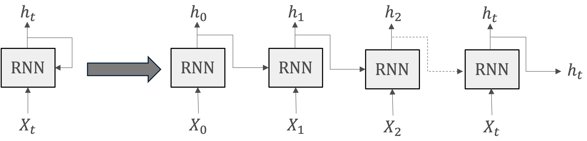
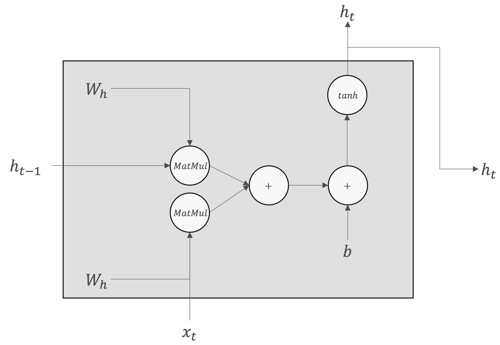
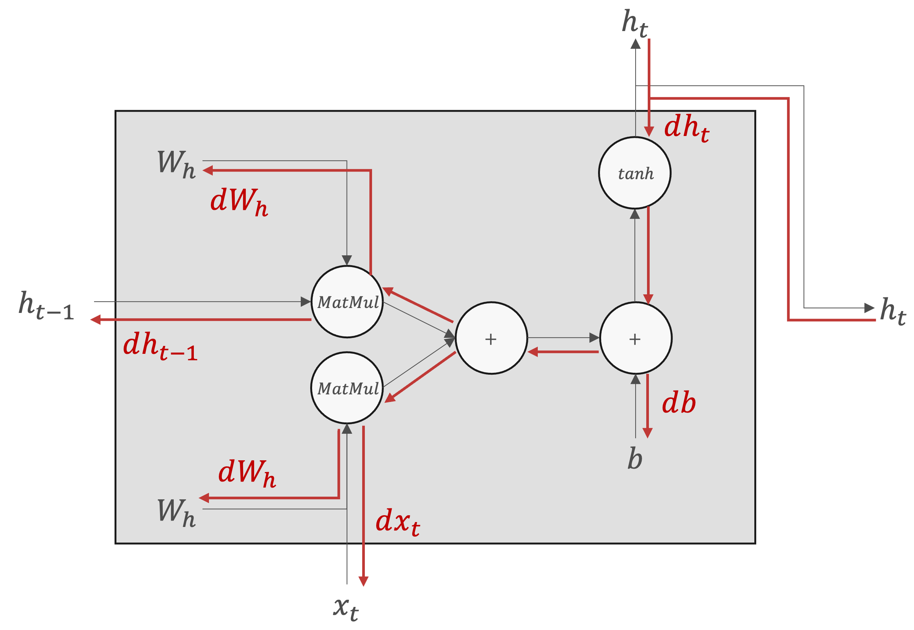
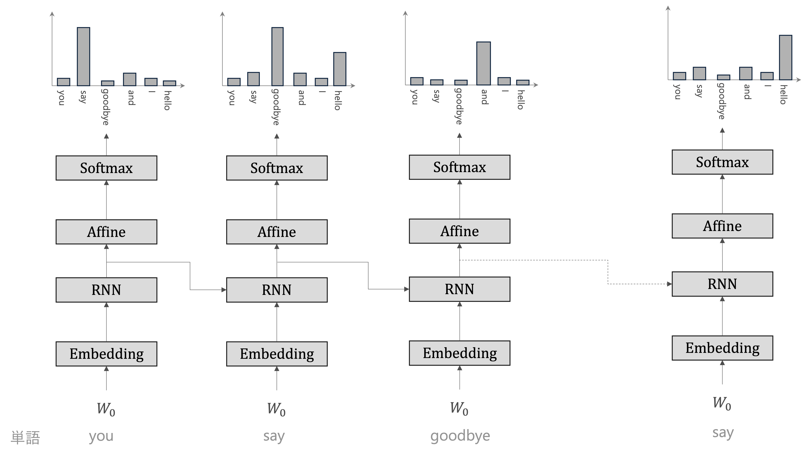

RNNの基礎#
これまで見てきたニューラルネットワークは、フィードフォワードと呼ばれるタイプのネットワークです。具体的には、入力信号が次の層へ信号を伝達し、信号を受け取った層その次の層へ伝達しといったように一方向だけの信号伝達を行います。
フィードフォワードが複雑なパターンや関係を学習でき、様々なタスクに応用できます。しかし、フィードフォワードネットワークは時間的なシーケンスやデータの順序を考慮する能力に欠けています。
フィードフォワードネットワークでは、データは入力層から隠れ層を経て出力層へと一方向に流れます。この構造では、前の層の出力が次の層の入力となるだけで、過去の入力に関する情報は保存されません。
フィードフォワードネットワークは、各入力を独立したものとして扱い、入力間の時間的な連続性や順序を認識しません。
時系列データや言語のように、順序が重要なタスクに対しては、フィードフォワードネットワークはこれらの関連性を捉えることができず、効果的な処理が難しいです。そごで、RNN(Recurrent Neural Network)の出番です。
基本的なRNN#
RNNは名前通り、「循環する」構造が設計されています。つまり、ある地点をスタートしたものが、時間を経て再び元の場所へと戻って来ること、そして、それを繰り返すこと。
循環するためには、RNNではループする経路を持っています。このループする経路によって、データは絶えず循環することができます。そしてデータが循環することにより、過去の情報を記憶しながら、最新のデータへと更新されます。
RNNの主要な要素#
入力\(x_t\):時刻を\(t\)として、\(x_t\)を入力としています。これは時系列データとして、\(x_0,x_1,...,x_t\)というデータがレイヤへ入力されることを示しています。
\(x_t\)は何らかのベクトルを想定します。文章(単語の並び)を扱う場合、各単語の分散表現を\(x_t\)になります。
隠れ状態\(h_t\):入力に対応する形で、\((h_0,h_1,...,h_t)\)が出力されます。
RNNの動作プロセス#
各時刻\(t\)において、RNNは現在の入力\(x_t\)と前の時刻の隠れ状態\(h_{t-1}\)を受け取ります。
これらの情報は、隠れ層のニューロンを通じて処理され、新しい隠れ状態\(h_t\)が生成されます。
この新しい隠れ状態は、次の時刻\(t+1\)の計算における「記憶」の一部として使用され、また必要に応じて出力も生成されます。
隠れ状態\(h_t\)は通常、以下のような形で計算されます：
\(h_t = f(W_{h} h_{t-1} + W_{x} x_t + b)\)
ここで、
\(f\) は非線形活性化関数（例：tanh、ReLU）。
\(W_{h}\) は隠れ状態間の接続を表す重み行列。
\(W_{x}\) は入力と隠れ状態の接続を表す重み行列。
\(b\) はバイアスベクトル。
\(h_t\)は、別のレイヤへ出力されると同時に、次時刻のRNNレイヤへも出力されます。これで、現在の出力\(h_t\)は、ひとつ前の出力\(h_{t-1}\)によって計算されることがわかります。

RNNレイヤの順伝播と逆伝播は以下の計算グラフで示されます。
順伝播 |
逆伝播 |
|---|---|
 |
 |
RNNLM#
言語モデル(Language Model)は、単語の並びに対して確率を与えることで、自然言語の文や文書を生成または理解します。
言語モデルの基本的な機能は、与えられたトークン列に対して、次のトークンの生成される確率を予測することです。
RNNでは時系列データを扱えますので、言語モデルの実装に用いられます。RNNによる言語モデルは、RNN Language Model(RNNLM)と呼びます。
CBOWモデルでも言語モデルとして適用することは可能ですか？RNNLMと比較することで考えなさい。

Embeddingレイヤ： Embeddingレイヤは、単語を単語の分散表現へ変換します
RNNレイヤ：単語の分散表現がRNNレイヤへと入力されます
隠れ状態を次の層へ出力されます
隠れ状態を次時刻のRNNレイヤへ出力します
次の層へ出力されます隠れ状態は、Affineレイヤを経てSoftmaxレイヤへと伝わっていきます。
Softmaxレイヤが出力するのは確率分布です
RNNの問題点#
RNNは過去の情報を継続的に更新しながら新しい入力を処理する機能を持っていますが、長期間の依存関係を捉えるのが難しいという「長期依存問題」が存在します。例えば、次で示されたタスクを考えてみたいと思います。
Tom was watching TV in his home. Mary came into the room. Mary said hi to 「？」
提示されたタスクは、文脈に基づいた適切な単語を特定することを要求しています。
この例では、「Tom」が以前の文で言及されており、Maryが部屋に入って「hi」と言っているため、空白に当てはまる最も適切な単語は「Tom」です。
RNNで処理する際、正解ラベルとして「Tom」という単語が与えられた場所から、過去の方向に向かって「意味のある勾配」を伝達することによって、時間方向の依存関係を学習することができます。しかし、勾配が途中で弱まったらーほとんど何も情報を持たなくなってしまったらー、重みパラメタは更新されなくなります。特に、期依存問題を処理する場合このような状況が生じる可能性が高い、これが「勾配消失」と呼ばれる現象です。
つまり、RNNは、時系列の問題に取り組むために設計されていますが、「長期依存問題」のために、長い文脈を持つタスクでは性能が低下することがあります。この問題は、RNNが過去の情報を十分に保持し続けることが困難であることに起因します。